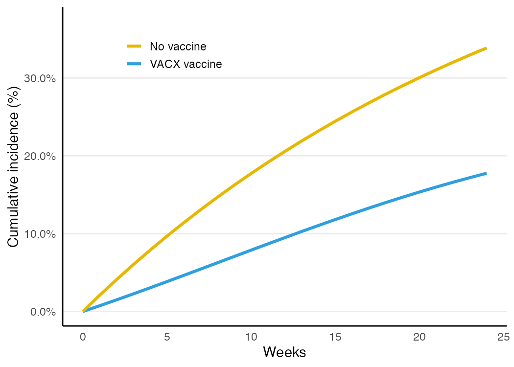
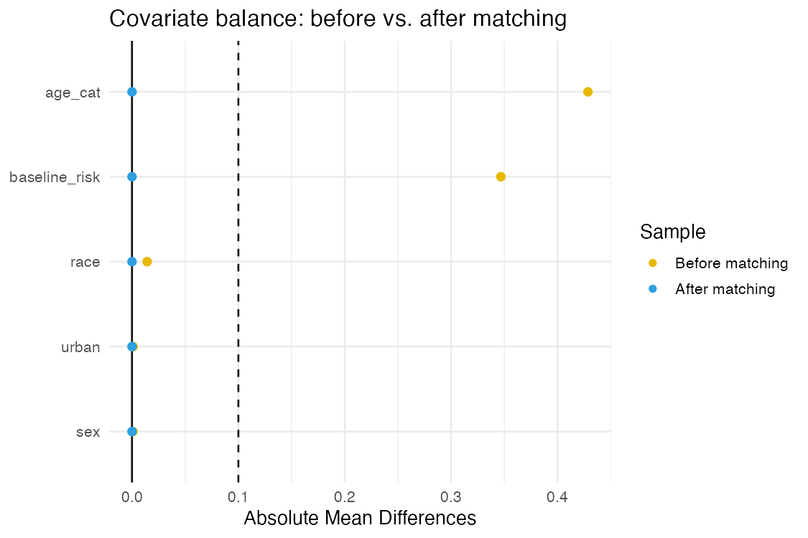
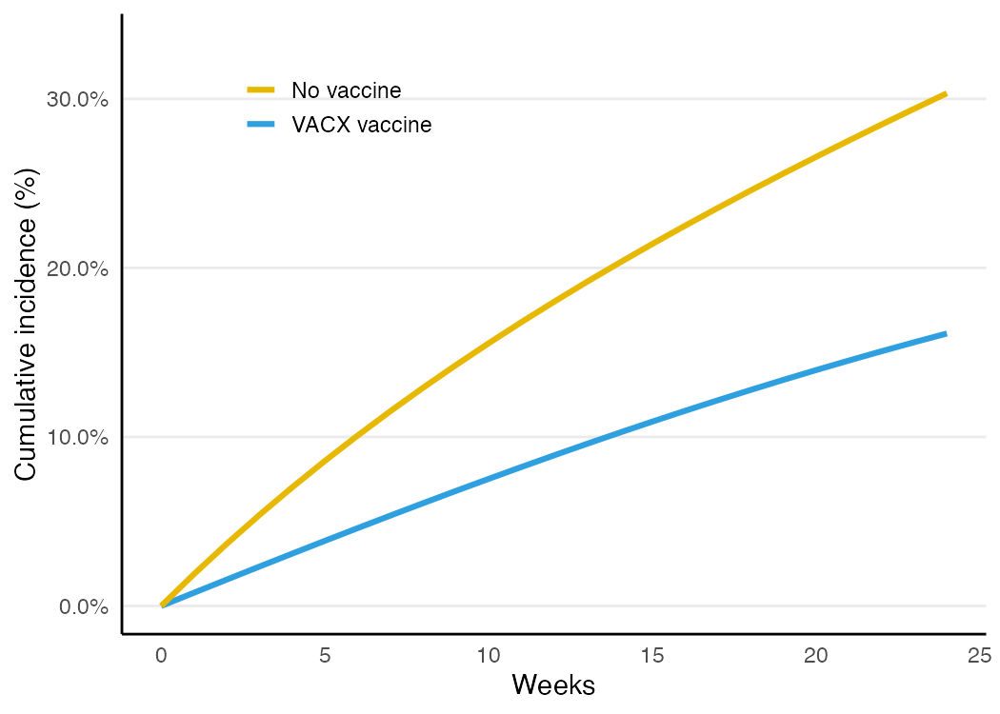
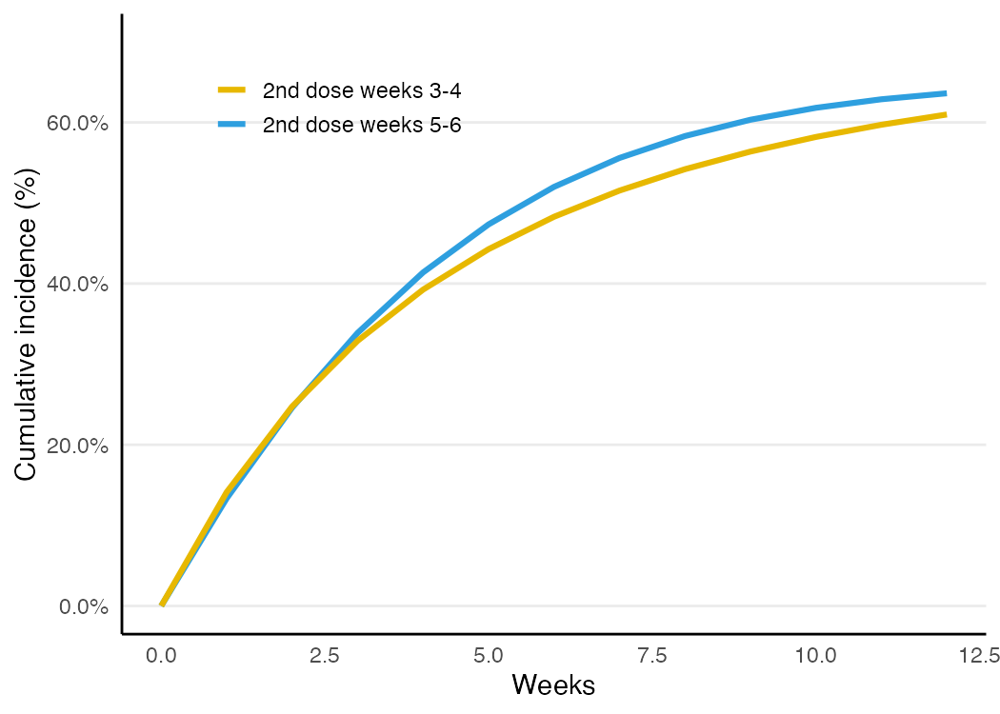

Make Causal Inference Less Casual: Target Trial Emulation Skills for Claude Code
Most of the damage in observational research is done before a single model is fit. We ask a question that isn’t quite a question — “do statin users have less heart disease than non-users?” — and then spend our energy on increasingly sophisticated estimators that can’t rescue it. The fix is not a fancier model. It’s a discipline: target trial emulation (TTE). Pin down the randomized trial you wish you could run, then use your data to imitate it as faithfully as possible.
I built a small toolkit that makes that discipline easy to follow inside Claude Code: TTE_CC. It’s a set of interactive skills that interview you about your causal question and push back when the design is unsound, plus a transparent R engine that does the estimation. This post explains what it does and walks through real analyses you can reproduce.
TTE_CC implements the target-trial-emulation framework from Hernán & Robins’ Causal Inference: What If and is built to be faithful to how TTE is taught by the Harvard CAUSALab. It’s an independent, open-source project (MIT).
Why “users vs. non-users” keeps failing
Two classic traps account for a huge share of observational studies that later disagree with trials:
- Prevalent-user bias. Comparing current users to never users compares survivors of treatment to everyone else. People who started and quit (or died) have already left the “current user” group.
- Immortal time bias. If you define someone as “treated” because they were treated at some point during follow-up, they had to survive long enough to get treated — manufacturing a survival advantage out of thin air.
Both are design errors, not data errors. No amount of regression fixes them. But they are also completely avoidable — if you force yourself to specify the trial first.
The two-step discipline
Step 1 — Ask. Write down the protocol of the target trial: eligibility, treatment strategies, assignment, outcome, follow-up, the causal contrast, identifying assumptions, and the analysis plan.
Step 2 — Answer. Emulate that trial in your data, adjusting for confounding to stand in for randomization — then check the emulation and report it honestly.
The slogan that organizes everything: if you can’t translate your question into a target trial, the question isn’t well-defined.
What TTE_CC gives you
TTE_CC is two things working together:
- Eight interactive skills that cover the whole workflow:
| Stage | Skill | What it does |
|---|---|---|
| Specify | target-trial |
Interviews you through the 8 protocol elements; refuses sloppy specs. |
time-zero |
Aligns eligibility = assignment = start of follow-up; catches immortal-time designs. | |
competing-events |
Forces an explicit estimand when death competes with your outcome. | |
| Emulate | emulate-randomization |
Elicits the confounders; picks an adjustment method. |
sustained-strategies |
Handles treatment sustained over time → g-methods, cloning, grace periods. | |
| Analyze | tte-estimate |
Writes readable R: matching, standardization, IP weighting, sequential trials, cloning. |
| Check / Report | check-emulation |
Negative controls, balance, positivity — falsify, don’t verify. |
tte-report |
A write-up scaffold that keeps causal language out of the Results section. |
- A transparent R engine. Every estimate is built from primitives you can read — a pooled logistic discrete-time hazard turned into a risk curve, with bootstrap confidence intervals — so the statistics never disappear into a black box.
Install the skills with one line:
curl -fsSL https://raw.githubusercontent.com/jacobjameson/TTE_CC/main/install.sh | bashThen, in Claude Code, type /target-trial and start describing your question.
The toolkit ships its own fully-synthetic teaching data describing a fictional vaccine, “VACX,” built from a known data-generating mechanism. Because the truth is known, every example below can be checked against it.
The skill in action: /target-trial
Here’s the part that matters most, and it’s a conversation. You open Claude Code, type /target-trial, and describe your question the way most of us would. The skill won’t let a sloppy spec through — it interviews you and pushes back.
You — /target-trial I want to estimate the effect of the VACX vaccine on coronavirus hospitalization. I’ll compare vaccinated vs. unvaccinated people in my claims data.
Claude — Before we touch the data, let’s make this a well-defined causal question. A couple of things in “vaccinated vs. unvaccinated people” will bias the answer:
- That’s a prevalent-user contrast — it compares people at every stage of treatment, including survivors. We should compare initiating VACX at baseline vs. not initiating, classified at a common time zero. Does that match your decision question?
- Observational data can’t emulate a placebo arm or blinding, so the comparator is usual care, open-label. OK?
- One more: is death possible during follow-up? It competes with hospitalization, so we’ll need to pick an estimand rather than quietly drop it.
You — Yes — the real question is whether starting VACX reduces hospitalization. And yes, some people die during follow-up.
Claude — Good — that’s an initiator design with death as a competing event. Let me pin down the remaining protocol elements:
- Eligibility (assessed at baseline only): adults, no prior infection, no contraindication, no prior VACX. What’s your washout window?
- Time zero: eligibility, treatment assignment, and start of follow-up must coincide — I’ll route the details to
/time-zeronext so we don’t create immortal time. - Confounders to stand in for randomization: which baseline variables predict both getting vaccinated and being hospitalized? (age, comorbidity/risk, healthcare utilization, calendar time…)
Here’s the protocol I’ll write to target_trial_protocol.md:
The artifact it produces is the contract the rest of the analysis honors:
| Element | Specification |
|---|---|
| Eligibility | Adults, no prior infection/contraindication, no prior VACX (at baseline) |
| Strategies | (0) no vaccination · (1) first dose at baseline |
| Assignment | Emulated by adjusting for age, baseline risk, healthcare use |
| Outcome | 24-week hospitalization (time-to-event; death competes) |
| Follow-up | Baseline → event / death / loss to follow-up / 24 weeks |
| Contrast | Intention-to-treat (effect of initiation) |
| Assumptions | Exchangeability given baseline confounders; positivity |
Now the analysis can begin — and only now.
First: the data has to be in the right shape
TTE has a specific data requirement that’s easy to get wrong: everything runs on long / person-time data — one row per person per follow-up interval. Covariates are recorded at the start of each interval, treatment within it, and the outcome is a 0/1 flag for “did the event happen in this interval.” It looks like this:
id time age treat hosp
1 0 52 1 0
1 1 52 1 0
1 2 52 1 1 # event in week 2 → hosp = 1 on this row
2 0 67 0 0Get this wrong — duplicate person-intervals, gaps in time, a wide one-row-per-person extract — and the hazard/risk machinery silently produces nonsense. So the skills check the format before doing anything, and won’t proceed until it passes:
You — Here’s my extract: claims.csv. Go ahead and run the matched analysis.
Claude — First let me confirm the data are in person-time format — TTE needs one row per person per interval.
check_person_time(claims, id = "id", time = "week", outcome = "hosp")
#> Person-time format check:
#> - 2,113 duplicate (id, week) rows — must be one row per person-intervalThat won’t work as-is — your file looks like one row per claim, not per person-week. It also has a single surv_weeks + event per person in another table, so the clean fix is to expand that to person-time:
long <- to_person_time(person_level, id = "id", surv_time = "surv_weeks",
event = "hosp", K = 24, keep = c("age","baseline_risk","treat"))
check_person_time(long, outcome = "hosp")
#> Person-time format OK: 8,000 people, 162,199 person-intervals, time 0..23.Now we can estimate. Want me to proceed with matching on the long data?
With the format guaranteed, the analyses below all “just work.”
Example 1: a randomized trial as the reference
When we can randomize, the analysis is simple. The engine fits a pooled logistic hazard and reads off risk curves; a Kaplan–Meier estimator is a nonparametric cross-check.
source("R/tte-helpers.R"); source("R/tte-plot.R")
load("data/vac_toy_random.rda")
km_risk(vac_toy_random, treat = "random", K = 24) # nonparametric
pl <- pooled_logistic_risk(vac_toy_random, treat = "random", K = 24) # parametric
pl$rd; pl$rrKM 24-wk risk: vaccine = 0.178 none = 0.338 RD = -0.161 RR = 0.52
PLR 24-wk risk: vaccine = 0.178 none = 0.338 RD = -0.161 RR = 0.52The two agree, and both land on the known truth (RD ≈ −0.171). The risk curves:

Outcomes don’t have to be time-to-event. A continuous endpoint (say an antibody titer at 24 weeks) is a one-liner, and a single binary endpoint works the same way:
point_effect(vac_toy_random, treat = "random", outcome = "titer", type = "continuous")
#> mean difference ≈ +119.8Example 2: emulating the trial with observational data
Now the realistic case: treatment wasn’t randomized, and sicker, older, more health-seeking people were more likely to get vaccinated. The naive comparison is confounded toward the null. With the protocol settled, you just ask for the estimate:
You — Looks right. Estimate it on vac_toy_obs, emulating randomization by matching on the baseline confounders.
Claude — I’ll use /tte-estimate in matching mode: 1:1 exact/coarsened matching on the confounders, then read off 24-week risks on the matched cohort (marginally — after matching no further adjustment is needed). I’ll bootstrap by resampling people, re-running the match inside each resample, and check balance with cobalt. Here’s the script:
load("data/vac_toy_obs.rda")
conf <- c("age_cat", "sex", "race", "urban", "baseline_risk")
naive <- pooled_logistic_risk(vac_toy_obs, treat = "treat", K = 24)
matched <- match_cohort(vac_toy_obs, "treat", covariates = conf)
est <- pooled_logistic_risk(matched, "treat", K = 24) # marginal after matching
# covariate balance before vs after matching
cobalt::love.plot(attr(matched, "match"), stats = "mean.diffs", abs = TRUE,
thresholds = c(m = .1))| Analysis | 24-week risk difference |
|---|---|
| Naive (confounded) | −0.088 |
| Matched | −0.142 |
| Truth | −0.171 |
Matching moves the estimate from a badly attenuated −0.088 toward the truth. The check-emulation skill confirms balance with a love plot — standardized differences before vs. after matching. The covariates start out imbalanced (the treated are older and higher-risk) and collapse to ~0 after exact matching:

With the groups now comparable, the risk curves are interpretable:

Example 3: inverse-probability weighting (and informative dropout)
IP weighting is the other workhorse. It also handles informative loss to follow-up with inverse-probability-of-censoring weights (IPCW). The whole pipeline — weights and model — is re-run inside the bootstrap so the confidence interval is honest.
w <- ip_weights(vac_toy_obs, "treat", covariates = conf, K = 24, censor = "censor")
est <- pooled_logistic_risk(w[w$censor == 0 & w$death == 0, ],
"treat", K = 24, weights = "w")
boot_tte(vac_toy_obs,
function(d) {
ww <- ip_weights(d, "treat", covariates = conf, K = 24, censor = "censor")
r <- pooled_logistic_risk(ww[ww$censor == 0 & ww$death == 0, ], "treat", K = 24, weights = "w")
c(rd = r$rd, rr = r$rr)
}, R = 500, id = "id")IPTW + IPCW RD = -0.150 95% CI (-0.174, -0.132)
stabilized weights: mean = 0.99, max = 2.0 (truncated at 99th pct)Example 4: competing events — there is no single answer
Death competes with hospitalization: a person who dies can never be hospitalized. There isn’t one “effect” here — there are several estimands, and they answer different questions. competing-events makes you choose, and flags the common trap of silently censoring at death (which targets an ill-defined “had no one died” effect).
for (e in c("total", "composite", "controlled")) {
d <- competing_events_transform(w, estimand = e, K = 24)
print(pooled_logistic_risk(d, "treat", K = 24, covariates = conf)$rd)
}| Estimand | What it asks | RD |
|---|---|---|
| Total effect | Effect on hospitalization, deaths kept “eternally outcome-free” | −0.147 |
| Composite | Effect on (hospitalization or death) | −0.134 |
| Controlled direct | “Had no one died” — ill-defined; strong assumption | −0.150 |
The point isn’t which number is right; it’s that you state the question before you pick the transform, and report the assumption each one rests on.
Example 5: sustained strategies and the cloning trick
The hardest — and most interesting — case is strategies that are indistinguishable at time zero. Suppose everyone gets a first dose at baseline, and the strategies differ only in when the second dose is taken: “by week 3” vs. “by week 5.” You cannot assign arms from baseline data without inviting immortal-time bias.
You — Now I want the effect of getting the second dose earlier — by week 3 vs. by week 5. Can I just compare people who took it at each time?
Claude — Careful — that’s a sustained strategy that’s indistinguishable at time zero: at baseline everyone looks identical, and you only learn the timing later. Comparing observed week-3 vs. week-5 takers is a naive per-protocol analysis, and it’s badly confounded — people who delay are systematically different (and you’d be selecting on the future). I’ll switch to /sustained-strategies and use cloning–censoring–weighting: clone each person into both arms, censor a clone when its data deviate from its assigned timing, and IP-weight to undo that censoring. Let me show you both so you can see the difference:
In the synthetic data, where the truth is known, the naive comparison doesn’t just shrink the effect — it gets the sign wrong:
load("data/vac_toy_tv.rda")
conf <- c("symp", "symp_lag1", "age", "baseline_risk")
both <- clone_censor_weight(vac_toy_tv, covariates = conf,
arm0 = c(3, 3), arm1 = c(5, 5), K = 12)
pooled_logistic_risk(both[!is.na(both$hosp), ], treat = "arm", time = "time",
K = 12, weights = "w")| Analysis | RD (2nd dose wk 5 vs wk 3) |
|---|---|
| Naive per-protocol | −0.141 ← confounded, wrong sign |
| Cloning + IP weighting | +0.013 |
| Truth | +0.053 |
The cloning approach — clone each person into both arms, censor a clone when its data deviate from its assigned strategy, and IP-weight to undo the censoring selection — recovers the correct direction (later second dose is worse) where the naive analysis points the opposite way. The residual gap from the exact truth reflects the parametric hazard approximation and positivity for exact-timing adherers — which is exactly why grace periods help.
Real strategies rarely demand an action on an exact day. Allowing a window — “second dose in weeks 3–4” vs. “5–6” — gives more adherent clones and better positivity. The same one function handles it, just with a wider window:
clone_censor_weight(vac_toy_tv, covariates = conf, arm0 = c(3, 4), arm1 = c(5, 6), K = 12)
#> grace period: RD = +0.026 — closer to the truth (+0.053) than exact timing
Why it’s built this way
A few choices I’d defend:
- The question comes first, enforced. The specification skills are deliberately opinionated. They will not let you run a prevalent-user contrast or a misaligned time zero without a fight. That friction is the point.
- Transparent code, not a black box. The engine is a few hundred lines of readable R built from hazards and cumulative products. You can audit every estimate. (Where mature packages like
TrialEmulationcover the same ground, you can cross-check against them — but they’re not a dependency.) - Truth you can check against. The bundled data are synthetic with a known data-generating mechanism, so the examples and the 50-test suite prove the estimators recover the truth and that naive analyses are biased — including the wrong-sign cloning example above.
- Honesty by construction. Confounding adjustment can never be verified, only falsified. The
check-emulationskill leans into negative controls, balance, and positivity, andtte-reportkeeps causal language out of the Results section.
Using it on your own research
The workflow is the same for your data:
/target-trial— specify the protocol; let it push back./time-zero— align eligibility, assignment, and start of follow-up./emulate-randomization(and/sustained-strategiesif treatment is sustained) — pick confounders and a method./tte-estimate— generate the analysis script./check-emulationand/tte-report— falsify and write up.
And the checking step is a conversation too — the skill is built around the idea that you can never prove there’s no unmeasured confounding, only look for evidence against your design:
You — How much should I trust the −0.15? Can we stress-test it?
Claude — We can’t verify no-unmeasured-confounding — only try to falsify it. With /check-emulation I’ll: (1) confirm covariate balance after weighting (here, standardized differences are ~0); (2) inspect the weight distribution for positivity problems (mean ≈ 1, max ≈ 2 after truncation — healthy); and (3) run a negative-control outcome — something VACX shouldn’t affect but with similar confounding. If that comes back non-null, it’s a red flag for residual bias. Want me to set up a negative control from your data?
One honest caveat: target trial emulation removes design biases (immortal time, prevalent-user selection). It does not remove data biases. If the confounders you need aren’t in your data, the estimate will be confounded — and the toolkit will tell you so rather than paper over it.
The repo, with full docs and runnable examples, is here: github.com/jacobjameson/TTE_CC. If you try it on a real question, I’d love to hear how it goes.